Last updated: 2017-10-30
Code version: 907bbb5
#This file will examine first the inflation of p-values from the QQ plot at the end of linear_modeling.Rmd, and then the asymmetry seen in the volcano plots from linear modeling.
#First, grab the qqplotting function I utilize from linear_modeling.Rmd:
newqqplot=function(pvals, quant, title){
len = length(pvals)
res=qqplot(-log10((1:len)/(1+len)),pvals,plot.it=F)
plot(res$x,res$y, main=title, xlab="Theoretical", ylab="Actual", col=ifelse(res$y>as.numeric(quantile(res$y, quant[1])), ifelse(res$y>as.numeric(quantile(res$y, quant[2])), "red", "blue"), "black"))
abline(0, 1)
}
#Load in necessary packages.
library(limma)Warning: package 'limma' was built under R version 3.4.1library(plyr)
library(tidyr)
library(data.table)
library(reshape2)
Attaching package: 'reshape2'The following objects are masked from 'package:data.table':
dcast, meltThe following object is masked from 'package:tidyr':
smithslibrary(ggplot2)
library(plotly)
Attaching package: 'plotly'The following object is masked from 'package:ggplot2':
last_plotThe following objects are masked from 'package:plyr':
arrange, mutate, rename, summariseThe following object is masked from 'package:stats':
filterThe following object is masked from 'package:graphics':
layoutlibrary(dplyr)Warning: package 'dplyr' was built under R version 3.4.1
Attaching package: 'dplyr'The following objects are masked from 'package:data.table':
between, first, lastThe following objects are masked from 'package:plyr':
arrange, count, desc, failwith, id, mutate, rename, summarise,
summarizeThe following objects are masked from 'package:stats':
filter, lagThe following objects are masked from 'package:base':
intersect, setdiff, setequal, unionlibrary(Hmisc)Loading required package: latticeLoading required package: survivalLoading required package: Formula
Attaching package: 'Hmisc'The following objects are masked from 'package:dplyr':
combine, src, summarizeThe following object is masked from 'package:plotly':
subplotThe following objects are masked from 'package:plyr':
is.discrete, summarizeThe following objects are masked from 'package:base':
format.pval, round.POSIXt, trunc.POSIXt, unitslibrary(gplots)
Attaching package: 'gplots'The following object is masked from 'package:stats':
lowesslibrary(stringr)
library(heatmaply)Loading required package: viridisLoading required package: viridisLite
---------------------
Welcome to heatmaply version 0.10.1
Type ?heatmaply for the main documentation.
The github page is: https://github.com/talgalili/heatmaply/
Suggestions and bug-reports can be submitted at: https://github.com/talgalili/heatmaply/issues
Or contact: <tal.galili@gmail.com>
To suppress this message use: suppressPackageStartupMessages(library(heatmaply))
---------------------library(RColorBrewer)
library(edgeR)
library(tidyverse)Loading tidyverse: tibble
Loading tidyverse: readr
Loading tidyverse: purrrConflicts with tidy packages ----------------------------------------------arrange(): dplyr, plotly, plyr
between(): dplyr, data.table
combine(): dplyr, Hmisc
compact(): purrr, plyr
count(): dplyr, plyr
failwith(): dplyr, plyr
filter(): dplyr, plotly, stats
first(): dplyr, data.table
id(): dplyr, plyr
lag(): dplyr, stats
last(): dplyr, data.table
mutate(): dplyr, plotly, plyr
rename(): dplyr, plotly, plyr
src(): dplyr, Hmisc
summarise(): dplyr, plotly, plyr
summarize(): dplyr, Hmisc, plyr
transpose(): purrr, data.tablelibrary(compiler)
library(bedr)
######################
#### bedr v1.0.3 ####
######################
checking binary availability...
* Checking path for bedtools... FAIL
* Checking path for bedops... FAIL
* Checking path for tabix... FAIL
tests and examples will be skipped on R CMD check if binaries are missingenableJIT(3)[1] 3#Now, as always, read in data files modified by initial_QC.Rmd and linear_modeling.Rmd
full.data <- fread("~/Desktop/Hi-C/full.data.10.Oct17", header = TRUE, data.table=FALSE, stringsAsFactors = FALSE)
Read 0.0% of 3151443 rows
Read 1.9% of 3151443 rows
Read 3.8% of 3151443 rows
Read 5.7% of 3151443 rows
Read 7.6% of 3151443 rows
Read 9.5% of 3151443 rows
Read 11.4% of 3151443 rows
Read 13.3% of 3151443 rows
Read 15.2% of 3151443 rows
Read 17.1% of 3151443 rows
Read 19.4% of 3151443 rows
Read 21.3% of 3151443 rows
Read 23.5% of 3151443 rows
Read 25.7% of 3151443 rows
Read 27.9% of 3151443 rows
Read 30.1% of 3151443 rows
Read 32.4% of 3151443 rows
Read 34.6% of 3151443 rows
Read 36.8% of 3151443 rows
Read 39.0% of 3151443 rows
Read 41.3% of 3151443 rows
Read 43.2% of 3151443 rows
Read 45.1% of 3151443 rows
Read 47.0% of 3151443 rows
Read 48.9% of 3151443 rows
Read 50.8% of 3151443 rows
Read 53.0% of 3151443 rows
Read 55.2% of 3151443 rows
Read 57.4% of 3151443 rows
Read 59.7% of 3151443 rows
Read 61.9% of 3151443 rows
Read 63.8% of 3151443 rows
Read 65.7% of 3151443 rows
Read 67.9% of 3151443 rows
Read 69.8% of 3151443 rows
Read 71.7% of 3151443 rows
Read 72.7% of 3151443 rows
Read 74.9% of 3151443 rows
Read 76.8% of 3151443 rows
Read 78.7% of 3151443 rows
Read 80.6% of 3151443 rows
Read 82.5% of 3151443 rows
Read 84.4% of 3151443 rows
Read 86.3% of 3151443 rows
Read 88.2% of 3151443 rows
Read 90.1% of 3151443 rows
Read 92.0% of 3151443 rows
Read 93.9% of 3151443 rows
Read 95.8% of 3151443 rows
Read 97.7% of 3151443 rows
Read 99.6% of 3151443 rows
Read 3151443 rows and 328 (of 328) columns from 5.053 GB file in 00:01:22data.4 <- fread("~/Desktop/Hi-C/data.4.10.Oct17", header=TRUE, data.table=FALSE, stringsAsFactors = FALSE)
Read 17.1% of 292670 rows
Read 37.6% of 292670 rows
Read 58.1% of 292670 rows
Read 78.6% of 292670 rows
Read 99.1% of 292670 rows
Read 292670 rows and 328 (of 328) columns from 0.605 GB file in 00:00:07#This is the QQ plot for species from the linear model for Hi-C values from linear_modeling.Rmd. We can see a significant inflation of p-values here rising above the expected normal distribution alarmingly quickly:
newqqplot(-log10(data.4$sp_pval), c(0.5, 0.75), "QQ Plot, Species P-vals, Data | 4")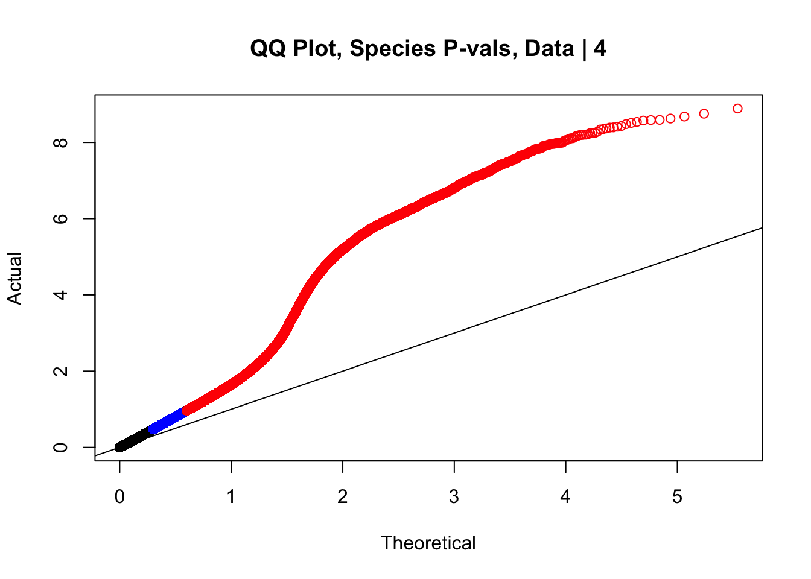
#In order to check that this extreme inflation of p values is not merely a technical artifact, here I try shuffling the species labels and running the linear model again. I would hope to see a more normal QQplot and this would perhaps suggest this the inflation seen is due to true biological effects, rather than technical factors. The fake designs just have some species swapped; the first two fake designs are balanced across sex and batch, and the second two are balanced with respect to batch (equal numbers of humans and chimps in both), but any sex-species interaction would be confounded with batch (since all members of a species in one batch are the same sex). Note that this ultimately shouldn't matter since I'm just for checking QQ normality here, especially since I'll start with the full model but then also remove batch and sex as covariates and re-check the QQ plot, to rule out overfitting.
fake.meta1 <- data.frame("SP"=c("H", "C", "H", "C", "H", "C", "C", "H"), "SX"=c("F", "M", "M", "F", "M", "F", "M", "F"), "Batch"=c(1, 1, 1, 1, 2, 2, 2, 2))
fake.meta2 <- data.frame("SP"=c("C", "H", "C", "H", "C", "H", "H", "C"), "SX"=c("F", "M", "M", "F", "M", "F", "M", "F"), "Batch"=c(1, 1, 1, 1, 2, 2, 2, 2))
fake.meta3 <- data.frame("SP"=c("H", "C", "C", "H", "C", "H", "C", "H"), "SX"=c("F", "M", "M", "F", "M", "F", "M", "F"), "Batch"=c(1, 1, 1, 1, 2, 2, 2, 2))
fake.meta4 <- data.frame("SP"=c("C", "H", "H", "C", "C", "H", "C", "H"), "SX"=c("F", "M", "M", "F", "M", "F", "M", "F"), "Batch"=c(1, 1, 1, 1, 2, 2, 2, 2))
#First, test out the fake metadataframess utilizing the linear model with all covariates included--species, sex, and batch.
lmFit(data.4[,304:311], model.matrix(~1+fake.meta1$SP+fake.meta1$SX+fake.meta1$Batch)) %>% eBayes(.) %>% topTable(., coef=2, sort.by="none", number=Inf) -> fake1
lmFit(data.4[,304:311], model.matrix(~1+fake.meta2$SP+fake.meta2$SX+fake.meta2$Batch)) %>% eBayes(.) %>% topTable(., coef=2, sort.by="none", number=Inf) -> fake2
lmFit(data.4[,304:311], model.matrix(~1+fake.meta3$SP+fake.meta3$SX+fake.meta3$Batch)) %>% eBayes(.) %>% topTable(., coef=2, sort.by="none", number=Inf) -> fake3Coefficients not estimable: fake.meta3$SXM Warning: Partial NA coefficients for 292670 probe(s)Warning in ebayes(fit = fit, proportion = proportion, stdev.coef.lim =
stdev.coef.lim, : Estimation of var.prior failed - set to default valuelmFit(data.4[,304:311], model.matrix(~1+fake.meta4$SP+fake.meta4$SX+fake.meta4$Batch)) %>% eBayes(.) %>% topTable(., coef=2, sort.by="none", number=Inf) -> fake4
newqqplot(-log10(fake1$P.Value), c(0.5, 0.75), "QQ Plot, Shuffled Design 1 | 4")newqqplot(-log10(fake2$P.Value), c(0.5, 0.75), "QQ Plot, Shuffled Design 2 | 4")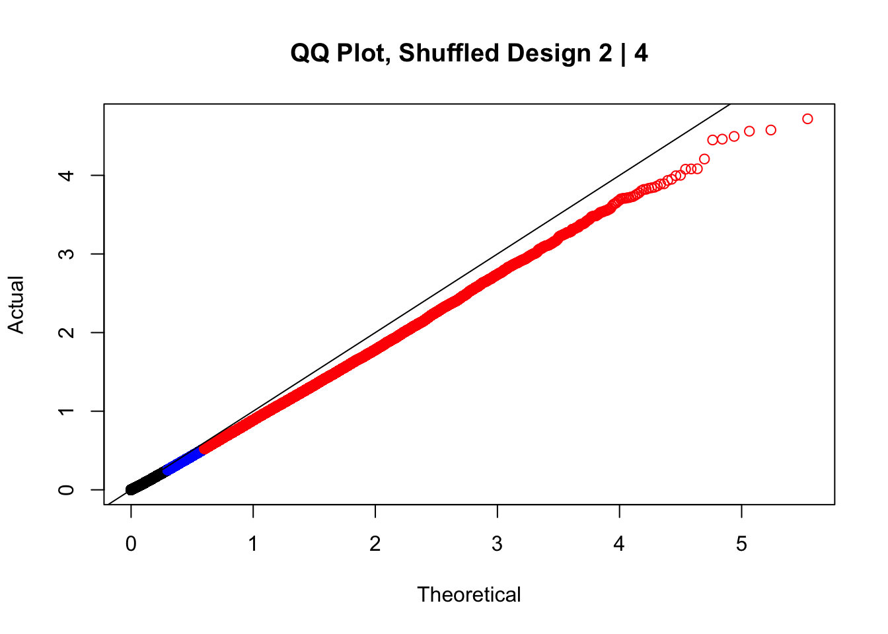
newqqplot(-log10(fake3$P.Value), c(0.5, 0.75), "QQ Plot, Shuffled Design 3 | 4")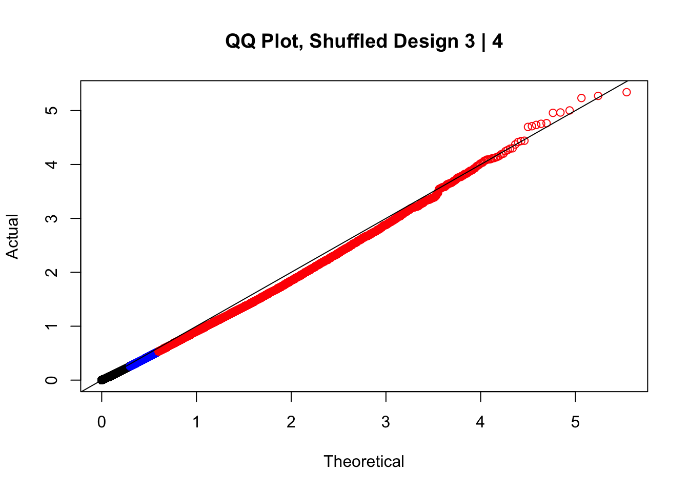
newqqplot(-log10(fake4$P.Value), c(0.5, 0.75), "QQ Plot, Shuffled Design 4 | 4")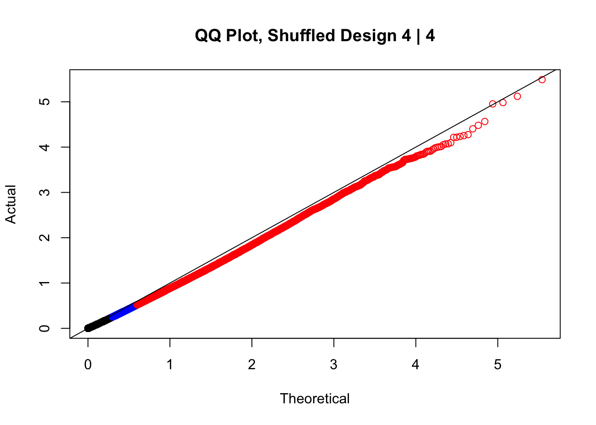
#While these QQ plots are nice in that they no longer show inflation of p-values quickly, many of them show slight deflation. Here I try doing the same thing again but without sex and then without batch, and then without both, as covariates--to account for the possibility that inclusion of these covariates in the model is overfitting:
lmFit(data.4[,304:311], model.matrix(~1+fake.meta1$SP+fake.meta1$Batch)) %>% eBayes(.) %>% topTable(., coef=2, sort.by="none", number=Inf) -> fake1
lmFit(data.4[,304:311], model.matrix(~1+fake.meta2$SP+fake.meta2$Batch)) %>% eBayes(.) %>% topTable(., coef=2, sort.by="none", number=Inf) -> fake2
lmFit(data.4[,304:311], model.matrix(~1+fake.meta3$SP+fake.meta3$Batch)) %>% eBayes(.) %>% topTable(., coef=2, sort.by="none", number=Inf) -> fake3
lmFit(data.4[,304:311], model.matrix(~1+fake.meta4$SP+fake.meta4$Batch)) %>% eBayes(.) %>% topTable(., coef=2, sort.by="none", number=Inf) -> fake4
newqqplot(-log10(fake1$P.Value), c(0.5, 0.75), "QQ Plot, Shuffled Design no SX, 1 | 4")newqqplot(-log10(fake2$P.Value), c(0.5, 0.75), "QQ Plot, Shuffled Design no SX, 2 | 4")newqqplot(-log10(fake3$P.Value), c(0.5, 0.75), "QQ Plot, Shuffled Design no SX, 3 | 4")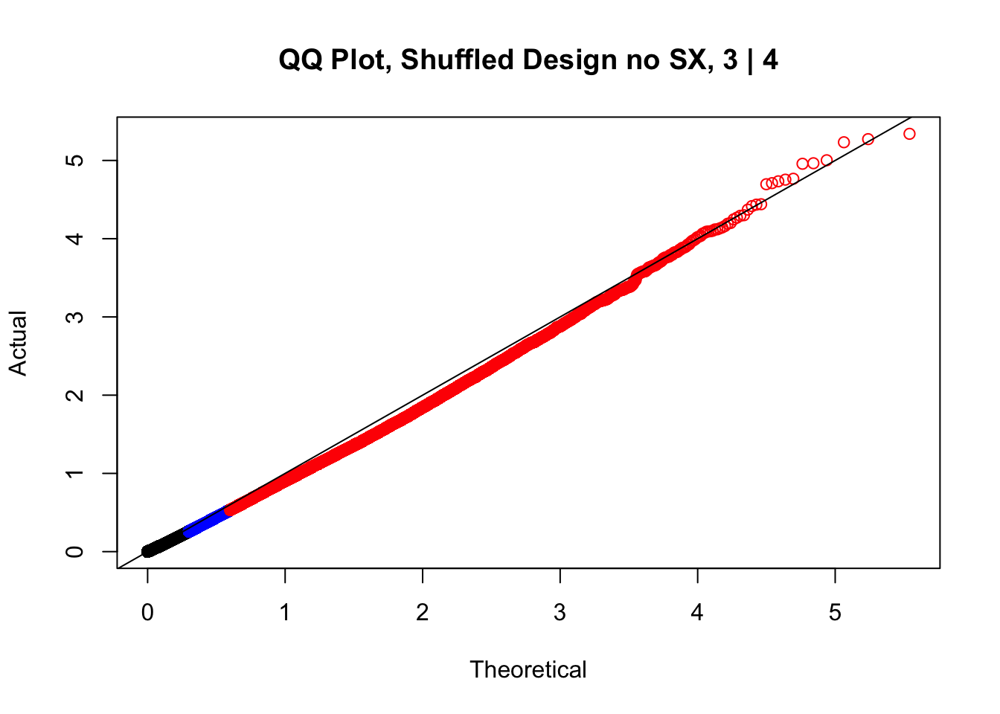
newqqplot(-log10(fake4$P.Value), c(0.5, 0.75), "QQ Plot, Shuffled Design no SX, 4 | 4")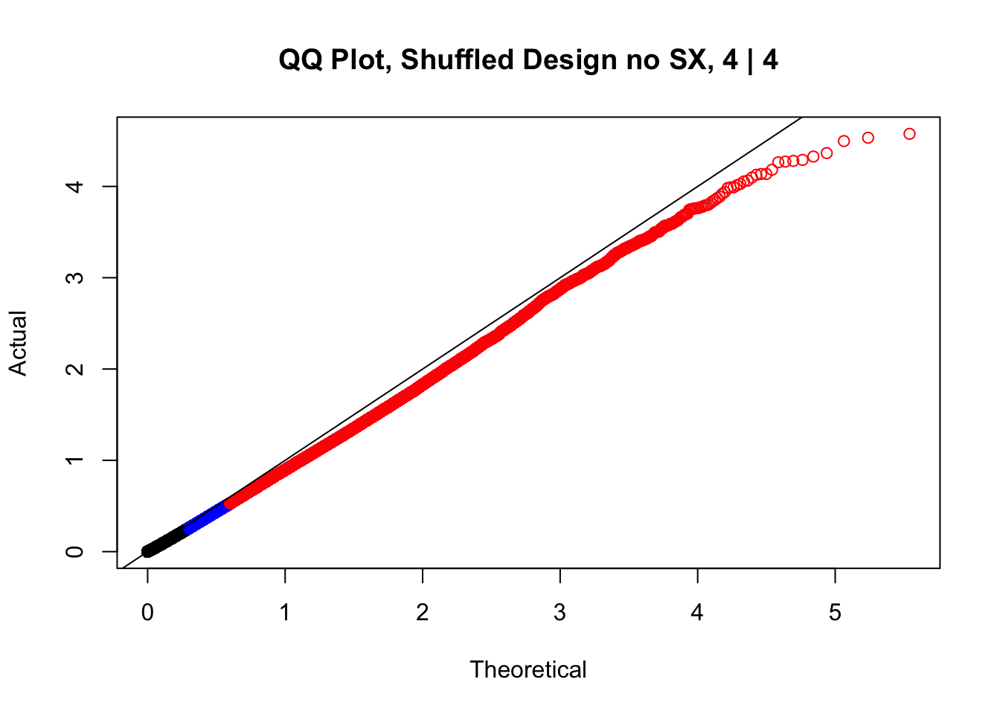
lmFit(data.4[,304:311], model.matrix(~1+fake.meta1$SP+fake.meta1$SX)) %>% eBayes(.) %>% topTable(., coef=2, sort.by="none", number=Inf) -> fake1
lmFit(data.4[,304:311], model.matrix(~1+fake.meta2$SP+fake.meta2$SX)) %>% eBayes(.) %>% topTable(., coef=2, sort.by="none", number=Inf) -> fake2
lmFit(data.4[,304:311], model.matrix(~1+fake.meta3$SP+fake.meta3$SX)) %>% eBayes(.) %>% topTable(., coef=2, sort.by="none", number=Inf) -> fake3Coefficients not estimable: fake.meta3$SXM Warning: Partial NA coefficients for 292670 probe(s)
Warning: Estimation of var.prior failed - set to default valuelmFit(data.4[,304:311], model.matrix(~1+fake.meta4$SP+fake.meta4$SX)) %>% eBayes(.) %>% topTable(., coef=2, sort.by="none", number=Inf) -> fake4
newqqplot(-log10(fake1$P.Value), c(0.5, 0.75), "QQ Plot, Shuffled Design no BTC, 1 | 4")newqqplot(-log10(fake2$P.Value), c(0.5, 0.75), "QQ Plot, Shuffled Design no BTC, 2 | 4")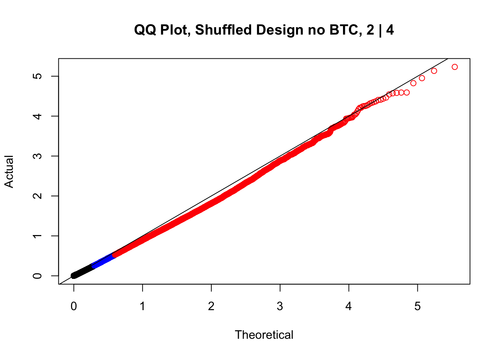
newqqplot(-log10(fake3$P.Value), c(0.5, 0.75), "QQ Plot, Shuffled Design no BTC, 3 | 4")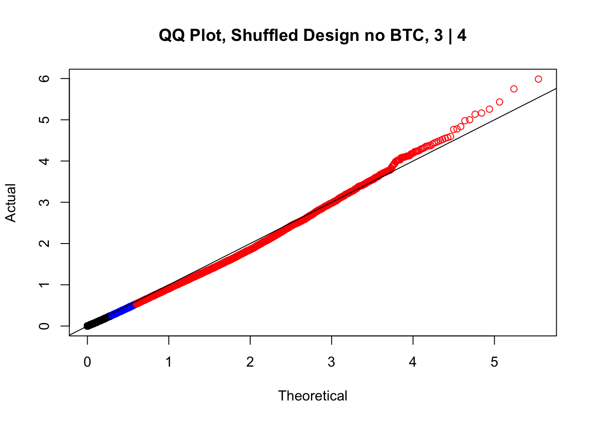
newqqplot(-log10(fake4$P.Value), c(0.5, 0.75), "QQ Plot, Shuffled Design no BTC, 4 | 4")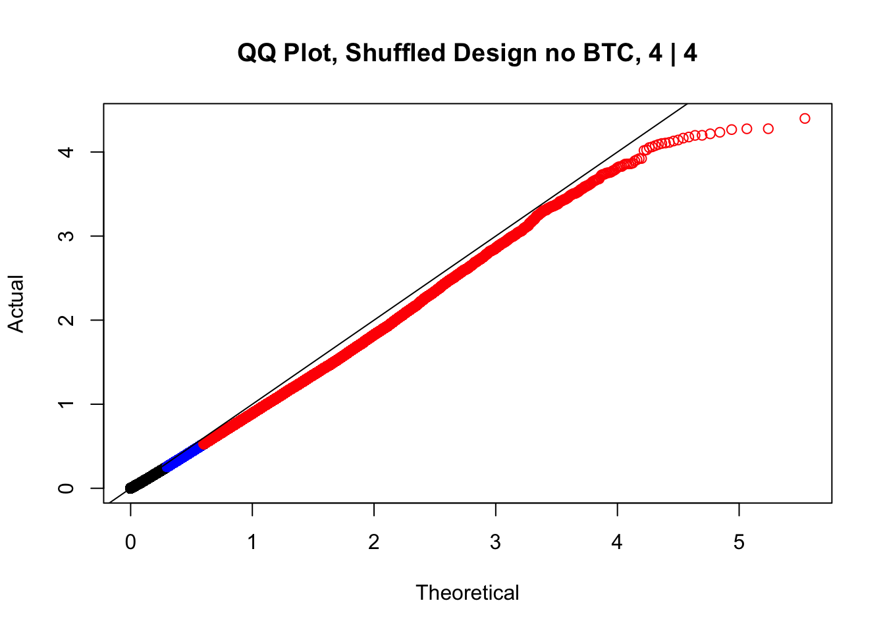
lmFit(data.4[,304:311], model.matrix(~1+fake.meta1$SP)) %>% eBayes(.) %>% topTable(., coef=2, sort.by="none", number=Inf) -> fake1
lmFit(data.4[,304:311], model.matrix(~1+fake.meta2$SP)) %>% eBayes(.) %>% topTable(., coef=2, sort.by="none", number=Inf) -> fake2
lmFit(data.4[,304:311], model.matrix(~1+fake.meta3$SP)) %>% eBayes(.) %>% topTable(., coef=2, sort.by="none", number=Inf) -> fake3
lmFit(data.4[,304:311], model.matrix(~1+fake.meta4$SP)) %>% eBayes(.) %>% topTable(., coef=2, sort.by="none", number=Inf) -> fake4
newqqplot(-log10(fake1$P.Value), c(0.5, 0.75), "QQ Plot, Shuffled Design SP only, 1 | 4")newqqplot(-log10(fake2$P.Value), c(0.5, 0.75), "QQ Plot, Shuffled Design SP only, 2 | 4")newqqplot(-log10(fake3$P.Value), c(0.5, 0.75), "QQ Plot, Shuffled Design SP only, 3 | 4")newqqplot(-log10(fake4$P.Value), c(0.5, 0.75), "QQ Plot, Shuffled Design SP only, 4 | 4")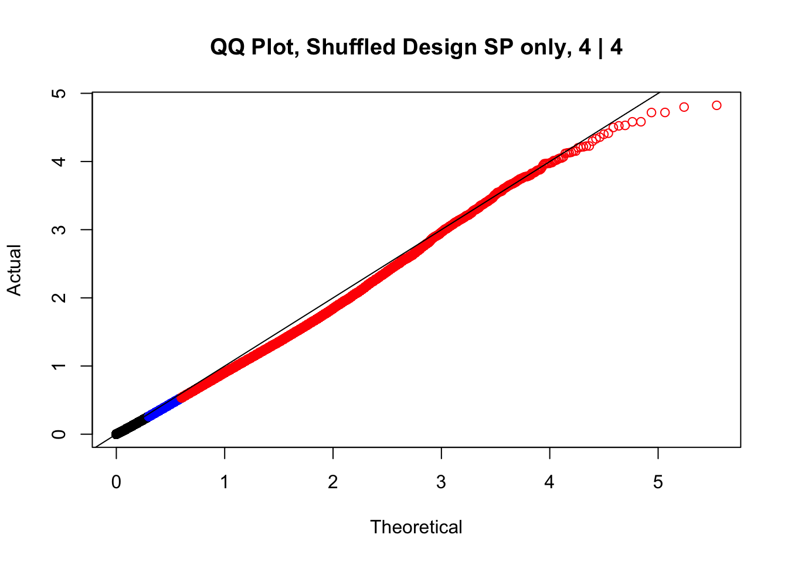
#These are slightly better, but many still show some small degree of deflation. In an attempt to ID the problem, I now add several other metrics measuring differences in bin sizes and pair distances between humans and chimps, to help identify differences that may be primarily driven by mapping of orthology or different genome builds rather than true biology. I will then subset the QQ plots to particular classes of these hits and see if any pattern emerges. This utilizes the normal set of p-values from the original design conditioned upon discovery in 4 individuals. To do this, I first have to pull out the mean start and end positions of bins for each of the species from the data:
H1startCmean <- rowMeans(data.4[,c('Hstart1-C', 'Hstart1-D', 'Hstart1-G', 'Hstart1-H')], na.rm=TRUE)
H1endCmean <- rowMeans(data.4[,c('Hend1-C', 'Hend1-D', 'Hend1-G', 'Hend1-H')], na.rm=TRUE)
H2startCmean <- rowMeans(data.4[,c('Hstart2-C', 'Hstart2-D', 'Hstart2-G', 'Hstart2-H')], na.rm=TRUE)
H2endCmean <- rowMeans(data.4[,c('Hend2-C', 'Hend2-D', 'Hend2-G', 'Hend2-H')], na.rm=TRUE)
C1startHmean <- rowMeans(data.4[,c('Cstart1-A', 'Cstart1-B', 'Cstart1-E', 'Cstart1-F')], na.rm=TRUE) #this is identical and easier.
C1endHmean <- rowMeans(data.4[,c('Cend1-A', 'Cend1-B', 'Cend1-E', 'Cend1-F')], na.rm=TRUE)
C2startHmean <- rowMeans(data.4[,c('Cstart2-A', 'Cstart2-B', 'Cstart2-E', 'Cstart2-F')], na.rm=TRUE)
C2endHmean <- rowMeans(data.4[,c('Cend2-A', 'Cend2-B', 'Cend2-E', 'Cend2-F')], na.rm=TRUE)
#Now, I use these data to add columns to the data frame for the sizes of bins and distance between bins. Note that I am only really looking at differences in the size of the "orthologous" bins called through liftover, as compared to their original size (10kb). Bin size differences in the values at the start of each individual's portion of the data frame for coordinates matching that species are merely due to size differences in reciprocal best hits liftover. The true size of bins within their own species is always 10kb. So here bin sizes being appended to the data frame are for lifted-over bins. I do the distance differences based on the HC-pair values (H1/H2 and C1/C2) that have been rounded to the nearest 10kb from the original values given by homer; since this should be balanced across species it shouldn't matter much. Worst case it would make the estimate off by 20kb, maximum.
H1sizeC <- H1endCmean-H1startCmean
H2sizeC <- H2endCmean-H2startCmean
data.4$H1diff <- abs(10000-H1sizeC)
data.4$H2diff <- abs(10000-H2sizeC)
C1sizeH <- C1endHmean-C1startHmean
C2sizeH <- C2endHmean-C2startHmean
data.4$C1diff <- abs(10000-C1sizeH)
data.4$C2diff <- abs(10000-C2sizeH)
data.4$Hdist <- abs(as.numeric(sub(".*-", "", data.4$H2))-as.numeric(sub(".*-", "", data.4$H1)))
data.4$Cdist <- abs(as.numeric(sub(".*-", "", data.4$C2))-as.numeric(sub(".*-", "", data.4$C1)))
data.4$dist_diff <- abs(data.4$Hdist-data.4$Cdist)
#Now I look at the distributions of some of these metrics to inform me about how best to bin the data for filtering and further QC checking.
quantile(data.4$H1diff, na.rm=TRUE) 0% 25% 50% 75% 100%
0.000000 8.666667 21.000000 52.500000 1104.000000 quantile(data.4$H2diff, na.rm=TRUE) 0% 25% 50% 75% 100%
0.0 8.5 21.0 52.0 1098.5 quantile(data.4$C1diff, na.rm=TRUE) 0% 25% 50% 75% 100%
0.000000 8.666667 21.000000 52.000000 1097.000000 quantile(data.4$C2diff, na.rm=TRUE) 0% 25% 50% 75% 100%
0.00000 8.50000 20.66667 51.33333 1099.00000 quantile(data.4$dist_diff, na.rm=TRUE) 0% 25% 50% 75% 100%
0 0 0 10000 77730000 #From this I can see that the majority of bin size differences are relatively small (<25 bp), and the majority of hits do not have a difference in distance between the mates in a pair across the species (all the way up to 50th percentile the distance difference is still 0). Now I'll take a look at some QQ plots filtering along these values to get an idea of if any of these technical orthology-calling artifacts are driving the inflation we see.
newqqplot(-log10(filter(data.4, H1diff<21&H2diff<21&C1diff<21&C2diff<21)$sp_pval), c(0.5, 0.75), "QQ Plot, Bin Size Changes < 21 bp | 4") #We can see that the QQplot looks a bit better if we only utilize hits where the bin size difference is less than the 50% percentile of their distribution.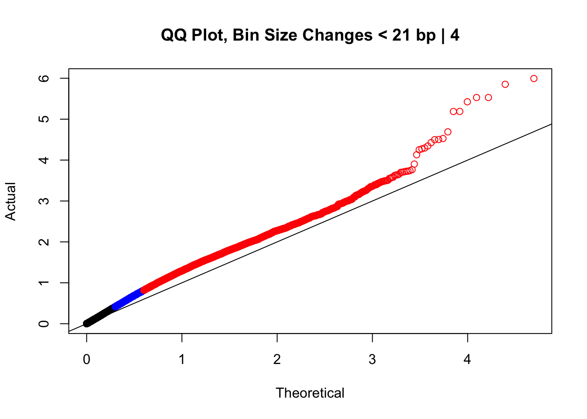
newqqplot(-log10(filter(data.4, H1diff>=21&H2diff>=21&C1diff>=21&C2diff>=21)$sp_pval), c(0.5, 0.75), "QQ Plot, Bin Size Changes >= 21bp | 4") #This doesn't look much different--what about the case where there are large differences in the size?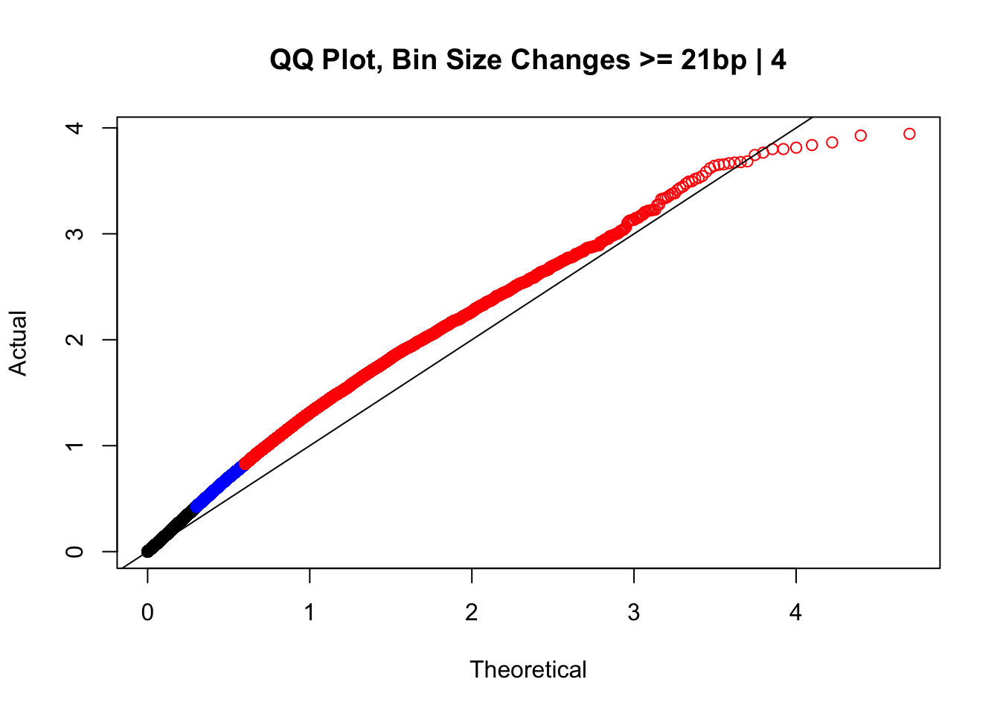
newqqplot(-log10(filter(data.4, H1diff>=100|H2diff>=100|C1diff>=100|C2diff>=100)$sp_pval), c(0.5, 0.75), "QQ Plot, Bin Size Changes >= 100 bp | 4") #It's hard to know what to make of this since here I am just allowing for any bin to have a size change greater than 100 bp. It looks fairly similar to the QQplot of the full data.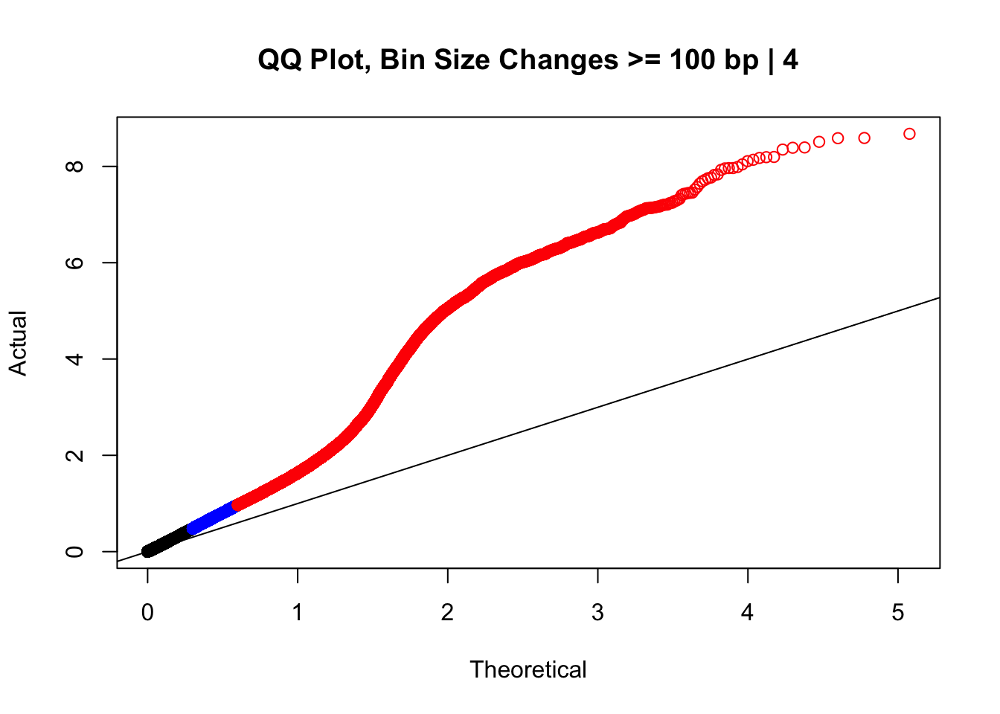
newqqplot(-log10(filter(data.4, H1diff>=500|H2diff>=500|C1diff>=500|C2diff>=500)$sp_pval), c(0.5, 0.75), "QQ Plot, Bin Size Changes >= 500 bp | 4") #It's hard to know what to make of this since here I am just allowing for any bin to have a size change greater than 500 bp.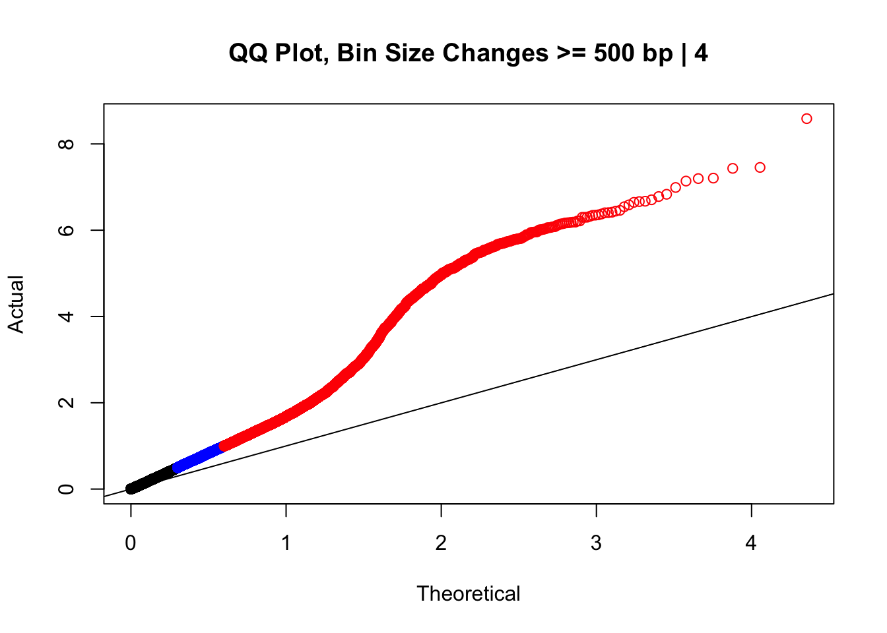
newqqplot(-log10(filter(data.4, H1diff>=1000|H2diff>=1000|C1diff>=1000|C2diff>=1000)$sp_pval), c(0.5, 0.75), "QQ Plot, Bin Size Changes >= 100 bp | 4") #It's hard to know what to make of this since here I am just allowing for any bin to have a size change greater than 1kb.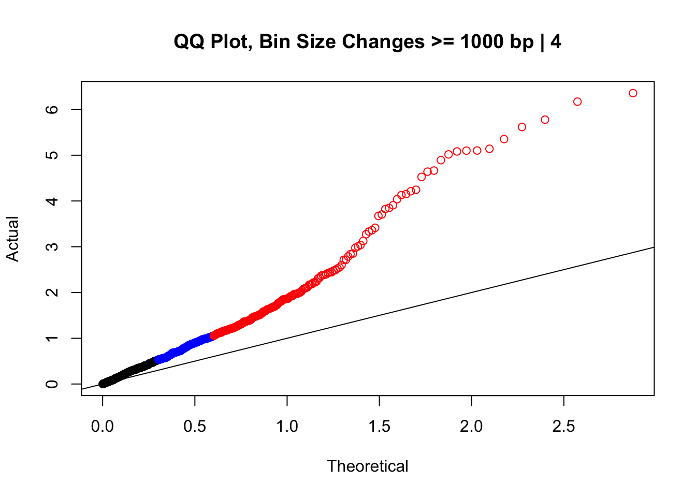
#It may be hard to say anything super definitive about the bin size changes from these plots, but the fact that they all still show inflation, and I don't see any stark difference between bin size changes exceeding 100 bp, suggests to me that bin size is having a minimal effect here. Still, we will include it when looking at filtering criteria below for figuring out what hits might need to be removed still.
newqqplot(-log10(filter(data.4, dist_diff>=100000)$sp_pval), c(0.5, 0.75), "QQ Plot, Distance Diff >= 100kb | 4") #This is good to know--see EXTREMELY strong inflation amongst this class of p-values, perhaps giving another criteria for filtering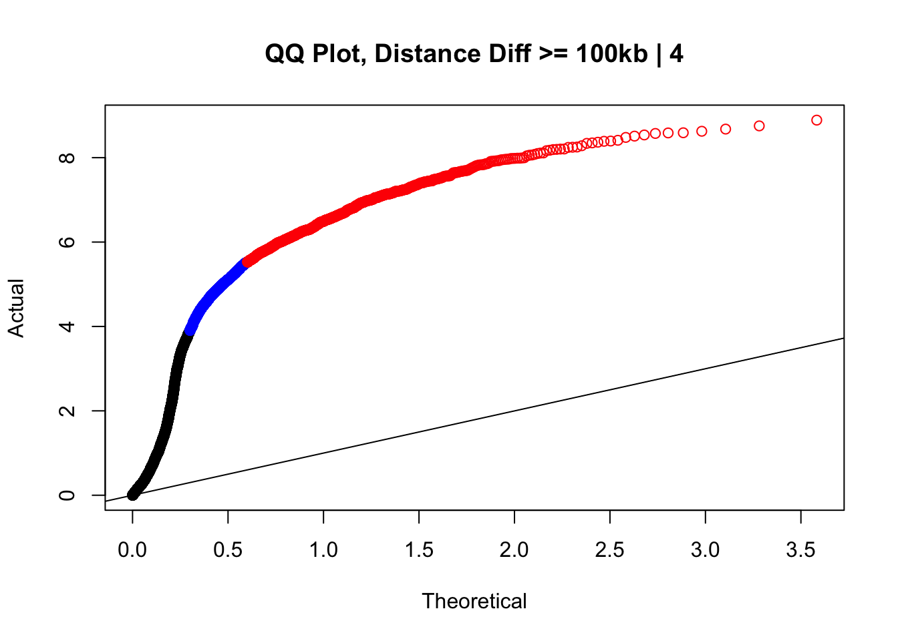
newqqplot(-log10(filter(data.4, dist_diff>=50000)$sp_pval), c(0.5, 0.75), "QQ Plot, Distance Diff >= 50kb | 4") #This is good to know--see that the inflation is a little weaker if we move towards including more pairs that have smaller distance differences between the species. What about pairs where there is no difference?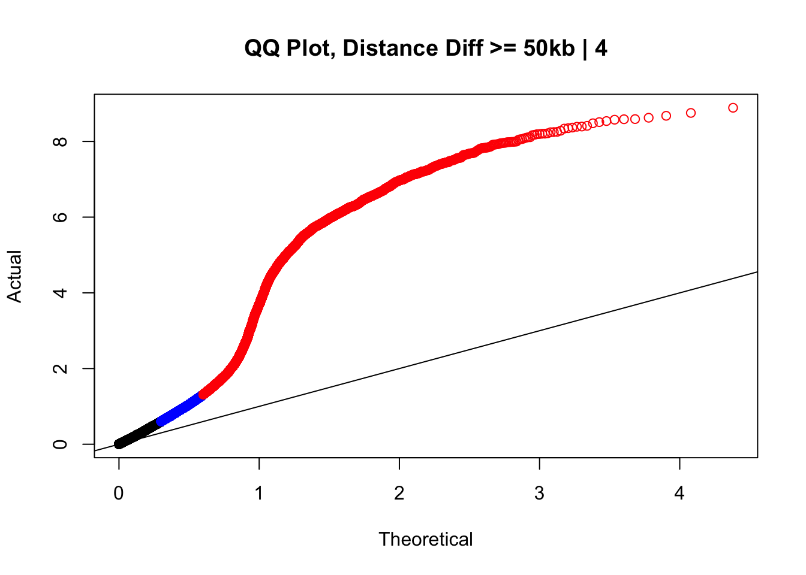
newqqplot(-log10(filter(data.4, dist_diff==0)$sp_pval), c(0.5, 0.75), "QQ Plot, NO Distance Diff | 4") #Values are still inflated, but the first solid 50% of the distribution stays along the normal line--this is great!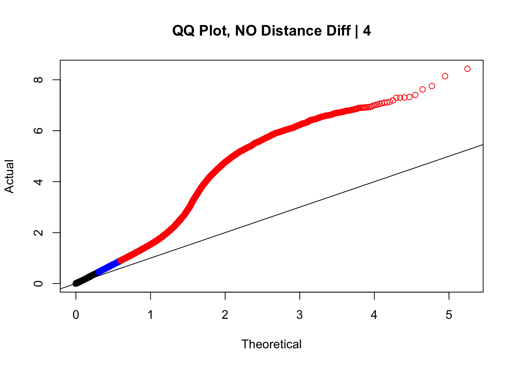
newqqplot(-log10(filter(data.4, dist_diff<=20000)$sp_pval), c(0.5, 0.75), "QQ Plot, Distance Diff <=20kb | 4") #And now we can see the trend in the opposite direction--SLIGHT inflation of the p-values when including more hits that have a larger distance difference.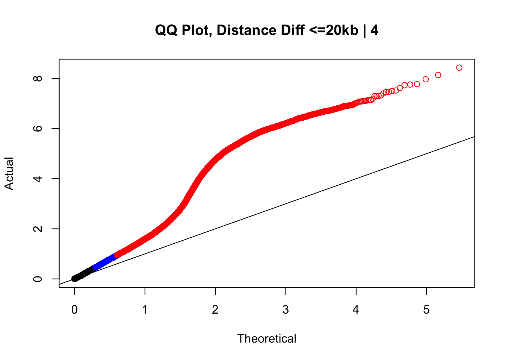
#Based on the quantiles from before, the size differences have relatively little variation in their distribution. Hence I will take them and summarize them as a single value here:
sizediffs <- rowMeans(select(data.4, H1diff, H2diff, C1diff, C2diff), na.rm=TRUE)
quantile(sizediffs, probs=seq(0, 1, 0.2)) 0% 20% 40% 60% 80% 100%
0.00000 13.50000 23.33333 42.18750 109.50000 1000.87500 #Now what I would like to do is find classes of hits--combinations between size and distance differences--that comprise roughly 10% of the data, or ~30k hits here. I will look at these classes in a 3-dimensional plot that includes size and distance differences as two of the axes, and the FDR from linear modeling on the 3rd. What I am in search of are classes of hits that show inflated FDR.
plot3d <- data.frame(bin_min=pmin(data.4$H1diff, data.4$H2diff, data.4$C1diff, data.4$C2diff, na.rm=TRUE), bin_max=pmax(data.4$H1diff, data.4$H2diff, data.4$C1diff, data.4$C2diff, na.rm=TRUE), bin_mean=sizediffs, dist_diff=data.4$dist_diff, FDR=data.4$sp_BH_pval)
#Of course, I already inherently know I will have a difficult time finding sets large enough with the bigger differences in distance, as only 10k or so of the hits even have a distance difference greater than 50kb. About half the hits have no distance difference, and of the remaining half, about half have size differences of 1-2 bins (10-20 kb), and half have greater size differences.
#First, I go in search of sets that will be large enough.
nrow(filter(plot3d, sizediffs<=13.5&dist_diff<10000)) #30k, a class of minimal changes--no distance difference, and minimal size difference.[1] 30420nrow(filter(plot3d, sizediffs<=23.33&sizediffs>13.5&dist_diff<10000)) #30k, still minimal changes[1] 30271nrow(filter(plot3d, sizediffs<=42.18750&sizediffs>23.33&dist_diff<10000)) #30k, minimal changes still, bin size getting up there[1] 30916nrow(filter(plot3d, sizediffs<=109.5&sizediffs>42.18750&dist_diff<10000)) #30k, minimal changes still, bin size even higher though[1] 30250nrow(filter(plot3d, sizediffs>109.5&dist_diff<10000)) #And there's another 30k! With big bin size changes.[1] 30641nrow(filter(plot3d, sizediffs<=13.5&dist_diff>=10000&dist_diff<=20000)) #19k, a class of minimal changes--no size difference, and minimal distance difference (1-2 bins off).[1] 19801nrow(filter(plot3d, sizediffs<=23.33&sizediffs>13.5&dist_diff>=10000&dist_diff<=20000)) #19k, small size difference, and minimal distance difference (1-2 bins off, 10-20 kb).[1] 19419nrow(filter(plot3d, sizediffs<=42.18750&sizediffs>23.33&dist_diff>=10000&dist_diff<=20000)) #19k, minimal changes still, bin size getting up there, and minimal distance difference (1-2 bins off, 10-20 kb).[1] 19575nrow(filter(plot3d, sizediffs<=109.5&sizediffs>42.18750&dist_diff>=10000&dist_diff<=20000)) #19k, minimal changes still, bin size even higher though, and minimal distance difference (1-2 bins off, 10-20 kb).[1] 19897nrow(filter(plot3d, sizediffs>109.5&dist_diff>=10000&dist_diff<=20000)) #And there's another 19k! With big bin size changes, and minimal distance difference (1-2 bins off, 10-20 kb).[1] 19920nrow(filter(plot3d, sizediffs<=13.5&dist_diff>20000)) #8k, a class of large changes--big distance difference, and minimal size difference.[1] 8674nrow(filter(plot3d, sizediffs<=23.33&sizediffs>13.5&dist_diff>20000)) #8k, a class of large changes--big distance difference, and relatively small size difference.[1] 8382nrow(filter(plot3d, sizediffs<=42.18750&sizediffs>23.33&dist_diff>20000)) #8k, a class of large changes--big distance difference, and median size difference.[1] 8157nrow(filter(plot3d, sizediffs<=109.5&sizediffs>42.18750&dist_diff>20000)) #8k, a class of large changes--big distance difference, and fairly large size difference.[1] 8395nrow(filter(plot3d, sizediffs>109.5&dist_diff>20000)) #8k, a class of the largest changes--big distance difference, and big size difference.[1] 7952#Now, create a data frame with these classes, their sizes, and the number of hits in each of the classes that is at FDR <= 0.05.
true3d <- data.frame(dist_class=c(rep("none", 5), rep("short", 5), rep("long", 5)), bin_quant=rep(1:5, 3), set_size=c(nrow(filter(plot3d, sizediffs<=13.5&dist_diff<10000)), nrow(filter(plot3d, sizediffs<=23.33&sizediffs>13.5&dist_diff<10000)), nrow(filter(plot3d, sizediffs<=42.18750&sizediffs>23.33&dist_diff<10000)), nrow(filter(plot3d, sizediffs<=109.5&sizediffs>42.18750&dist_diff<10000)), nrow(filter(plot3d, sizediffs>109.5&dist_diff<10000)), nrow(filter(plot3d, sizediffs<=13.5&dist_diff>=10000&dist_diff<=20000)), nrow(filter(plot3d, sizediffs<=23.33&sizediffs>13.5&dist_diff>=10000&dist_diff<=20000)), nrow(filter(plot3d, sizediffs<=42.18750&sizediffs>23.33&dist_diff>=10000&dist_diff<=20000)), nrow(filter(plot3d, sizediffs<=109.5&sizediffs>42.18750&dist_diff>=10000&dist_diff<=20000)), nrow(filter(plot3d, sizediffs>109.5&dist_diff>=10000&dist_diff<=20000)), nrow(filter(plot3d, sizediffs<=13.5&dist_diff>20000)), nrow(filter(plot3d, sizediffs<=23.33&sizediffs>13.5&dist_diff>20000)), nrow(filter(plot3d, sizediffs<=42.18750&sizediffs>23.33&dist_diff>20000)), nrow(filter(plot3d, sizediffs<=109.5&sizediffs>42.18750&dist_diff>20000)), nrow(filter(plot3d, sizediffs>109.5&dist_diff>20000))), num_sig=c(nrow(filter(plot3d, sizediffs<=13.5&dist_diff<10000&FDR<=0.05)), nrow(filter(plot3d, sizediffs<=23.33&sizediffs>13.5&dist_diff<10000&FDR<=0.05)), nrow(filter(plot3d, sizediffs<=42.18750&sizediffs>23.33&dist_diff<10000&FDR<=0.05)), nrow(filter(plot3d, sizediffs<=109.5&sizediffs>42.18750&dist_diff<10000&FDR<=0.05)), nrow(filter(plot3d, sizediffs>109.5&dist_diff<10000&FDR<=0.05)), nrow(filter(plot3d, sizediffs<=13.5&dist_diff>=10000&dist_diff<=20000&FDR<=0.05)), nrow(filter(plot3d, sizediffs<=23.33&sizediffs>13.5&dist_diff>=10000&dist_diff<=20000&FDR<=0.05)), nrow(filter(plot3d, sizediffs<=42.18750&sizediffs>23.33&dist_diff>=10000&dist_diff<=20000&FDR<=0.05)), nrow(filter(plot3d, sizediffs<=109.5&sizediffs>42.18750&dist_diff>=10000&dist_diff<=20000&FDR<=0.05)), nrow(filter(plot3d, sizediffs>109.5&dist_diff>=10000&dist_diff<=20000&FDR<=0.05)), nrow(filter(plot3d, sizediffs<=13.5&dist_diff>20000&FDR<=0.05)), nrow(filter(plot3d, sizediffs<=23.33&sizediffs>13.5&dist_diff>20000&FDR<=0.05)), nrow(filter(plot3d, sizediffs<=42.18750&sizediffs>23.33&dist_diff>20000&FDR<=0.05)), nrow(filter(plot3d, sizediffs<=109.5&sizediffs>42.18750&dist_diff>20000&FDR<=0.05)), nrow(filter(plot3d, sizediffs>109.5&dist_diff>20000&FDR<=0.05))))
true3d$prop <- true3d$num_sig/true3d$set_size #Get the proportion of these different sets that are significant (at or below 5% FDR)
#I will then take this data frame and export it to plot.ly's online interface, in order to make a 3D graph that will allow me to visualize FDR significance inflation in any of these sets (and subsequently filter them out).
#Now, I once again show the volcano plot for 4 individuals. Observe the stark asymmetry with a pile-up of hits on the left side as compared to the right.
volcplot.4 <- data.frame(pval=-log10(data.4$sp_pval), beta=data.4$sp_beta, species=data.4$disc_species, chr=data.4$Hchr)
ggplot(data=volcplot.4, aes(x=beta, y=pval)) + geom_point() + xlab("Log2 Fold Change in Contact Frequency") + ylab("-log10 BH-corrected p-values") + ggtitle("Contact Frequency Differences | 4 Individuals")ggplot(data=volcplot.4, aes(x=beta, y=pval, color=species)) + geom_point() + xlab("Log2 Fold Change in Contact Frequency") + ylab("-log10 BH-corrected p-values") + ggtitle("Contact Frequency Differences Colored by Species of Discovery | 4")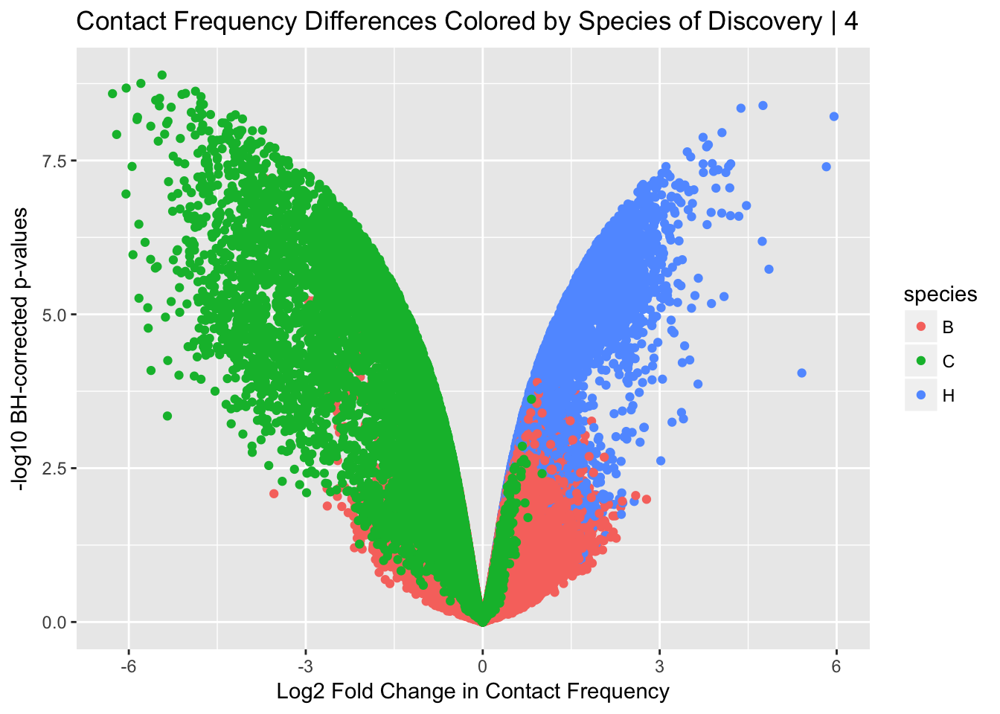
#As expected, we see that hits which produce a strong negative beta in the linear model (suggesting a marked decrease in contact frequency in humans as compared to chimps) are primarily discovered as significant by homer in chimpanzees. The inverse also holds true for human discoveries. This is reassuring, but still, why the asymmetry? Here I break this plot down on a chromosome-by-chromosome basis to see if this is being driven by individual chromosomes ore is an overall issue with the technique or its processing:
#First rearrange chrs to make a prettier plot that has chrs sequential:
levels(volcplot.4$chr) [1] "chr1" "chr10" "chr11" "chr12" "chr13" "chr14" "chr15" "chr16"
[9] "chr17" "chr18" "chr19" "chr2" "chr20" "chr21" "chr22" "chr3"
[17] "chr4" "chr5" "chr6" "chr7" "chr8" "chr9" "chrX" "chrY" volcplot.4$chr <- factor(volcplot.4$chr, levels(volcplot.4$chr)[c(1, 12, 16:22, 2:11, 13:15, 23:24)]) #Reorder factor levels!
levels(volcplot.4$chr) [1] "chr1" "chr2" "chr3" "chr4" "chr5" "chr6" "chr7" "chr8"
[9] "chr9" "chr10" "chr11" "chr12" "chr13" "chr14" "chr15" "chr16"
[17] "chr17" "chr18" "chr19" "chr20" "chr21" "chr22" "chrX" "chrY" ggplot(volcplot.4, aes(x=beta, y=pval, color=species)) + geom_point(size=0.001) + ggtitle("Volcano Plots by Chr") + facet_wrap(~as.factor(chr), nrow=5, ncol=5) + guides(color=FALSE)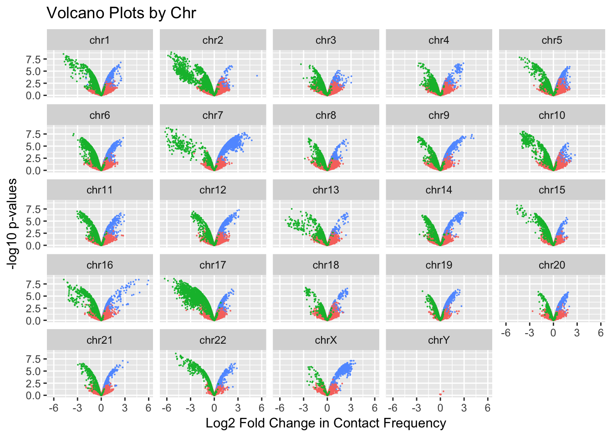
#This is extremely interesting. It appears that the asymmetry seen is being driven primarily by only some of the chromosomes, and particularly ones where large-scale rearrangements have transpired between humans and chimps (e.g. chrs 2, 16, 17). This will warrant further investigation in another element of the analysis; for now, I am satisfied that the asymmetry is not an issue with the entire dataset but is confined to individual chromosomes. I will need to go quantify some of the orthology calling on these chromosomes later to confirm high quality of the data.
#Write out the modified dfs.sessionInfo()R version 3.4.0 (2017-04-21)
Platform: x86_64-apple-darwin15.6.0 (64-bit)
Running under: OS X El Capitan 10.11.6
Matrix products: default
BLAS: /Library/Frameworks/R.framework/Versions/3.4/Resources/lib/libRblas.0.dylib
LAPACK: /Library/Frameworks/R.framework/Versions/3.4/Resources/lib/libRlapack.dylib
locale:
[1] en_US.UTF-8/en_US.UTF-8/en_US.UTF-8/C/en_US.UTF-8/en_US.UTF-8
attached base packages:
[1] compiler stats graphics grDevices utils datasets methods
[8] base
other attached packages:
[1] bindrcpp_0.2 bedr_1.0.3 purrr_0.2.2.2
[4] readr_1.1.1 tibble_1.3.3 tidyverse_1.1.1
[7] edgeR_3.18.1 RColorBrewer_1.1-2 heatmaply_0.10.1
[10] viridis_0.4.0 viridisLite_0.2.0 stringr_1.2.0
[13] gplots_3.0.1 Hmisc_4.0-3 Formula_1.2-2
[16] survival_2.41-3 lattice_0.20-35 dplyr_0.7.2
[19] plotly_4.7.0 ggplot2_2.2.1 reshape2_1.4.2
[22] data.table_1.10.4 tidyr_0.6.3 plyr_1.8.4
[25] limma_3.32.4
loaded via a namespace (and not attached):
[1] nlme_3.1-131 bitops_1.0-6 lubridate_1.6.0
[4] httr_1.3.1 rprojroot_1.2 prabclus_2.2-6
[7] tools_3.4.0 backports_1.1.0 R6_2.2.2
[10] rpart_4.1-11 KernSmooth_2.23-15 lazyeval_0.2.0
[13] colorspace_1.3-2 trimcluster_0.1-2 nnet_7.3-12
[16] gridExtra_2.2.1 mnormt_1.5-5 VennDiagram_1.6.17
[19] git2r_0.19.0 rvest_0.3.2 htmlTable_1.9
[22] TSP_1.1-5 xml2_1.1.1 labeling_0.3
[25] diptest_0.75-7 caTools_1.17.1 scales_0.4.1
[28] checkmate_1.8.3 DEoptimR_1.0-8 mvtnorm_1.0-6
[31] psych_1.7.5 robustbase_0.92-7 digest_0.6.12
[34] foreign_0.8-69 R.utils_2.5.0 rmarkdown_1.6
[37] base64enc_0.1-3 pkgconfig_2.0.1 htmltools_0.3.6
[40] readxl_1.0.0 htmlwidgets_0.9 rlang_0.1.1
[43] rstudioapi_0.7 bindr_0.1 jsonlite_1.5
[46] mclust_5.3 gtools_3.5.0 R.oo_1.21.0
[49] acepack_1.4.1 dendextend_1.5.2 magrittr_1.5
[52] modeltools_0.2-21 futile.logger_1.4.3 Matrix_1.2-10
[55] Rcpp_0.12.12 munsell_0.4.3 R.methodsS3_1.7.1
[58] stringi_1.1.5 whisker_0.3-2 yaml_2.1.14
[61] MASS_7.3-47 flexmix_2.3-14 grid_3.4.0
[64] parallel_3.4.0 gdata_2.18.0 crayon_1.3.4
[67] forcats_0.2.0 haven_1.1.0 splines_3.4.0
[70] hms_0.3 locfit_1.5-9.1 knitr_1.17
[73] fpc_2.1-10 codetools_0.2-15 stats4_3.4.0
[76] futile.options_1.0.0 glue_1.1.1 gclus_1.3.1
[79] evaluate_0.10.1 latticeExtra_0.6-28 lambda.r_1.2
[82] modelr_0.1.1 foreach_1.4.3 testthat_1.0.2
[85] cellranger_1.1.0 gtable_0.2.0 kernlab_0.9-25
[88] assertthat_0.2.0 broom_0.4.2 class_7.3-14
[91] seriation_1.2-2 iterators_1.0.8 registry_0.3
[94] cluster_2.0.6 This R Markdown site was created with workflowr